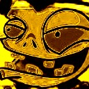
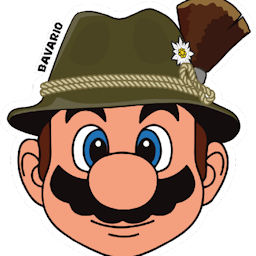
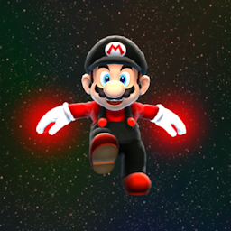
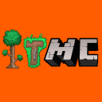
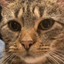
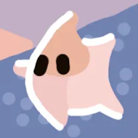

The leader of the organization and a big troll.

Expert custom code modder that is always cooking.
The main SMG coder of the group.

Hosts mariogalaxy.org and the Gearmo bot, and creator of SMG2 Multiplayer.
Admin of the Server and an advocate of SMG1.

The creator of SMG2: More Missions.

A modder who plays around with SMG's JAudio system.
The creator of SMG2: Master Mode.
3D modeller and SMG reverse-engineer.
Creator of the Blenxy plugin who likes Java. (for some reason)
The creator of SMG2: Collector's Anxiety.

Owner of Under Mario's Hat. SMG and Wii modding enthusiast.
The creator of SMG2: Cosmos Collapse.
Tool developer and modder that remade this website out of boredom!
A custom code framework adding many new objects to the game, such as Blue and Red Coins.
A manager for downloading and compiling Syati Modules.
A general purpose data stream for C#.
A tool for converting and modifying RARC/CRAR files from the Nintendo J3D era.
Learn all about how to make your own custom actor in Super Mario Galaxy 2 here!
A database keeping track of every Super Mario Galaxy 1/2 Mod.